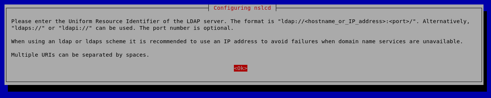
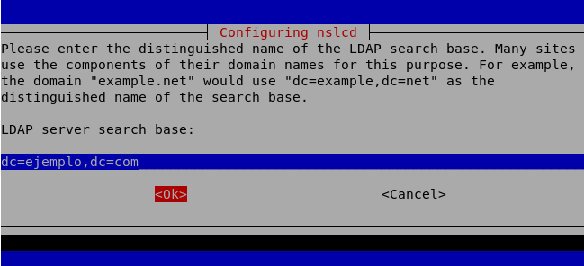
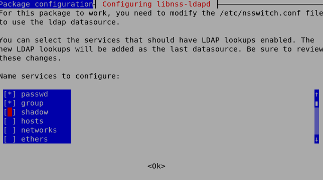
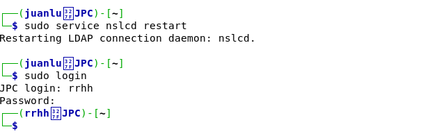

Autenticación del Sistema Operativo mediante LDAP
Introducción
Una vez que se ha completado la instalación de LDAP en un sistema operativo Linux, se procederá a la autenticación por parte de una aplicación o del mismo sistema operativo en el servicio de directorio. La autenticación de LDAP es una de las funciones más importantes, ya sea en FTP, en páginas web o en cualquier otro servicio.
Hasta ahora, el sistema operativo Linux autentica mediante los archivos clásicos /etc/passwd, /etc/group y /etc/shadow. Sin embargo, también se puede autenticar a través de otros métodos como NIS, LDAP, WINS, etc.
Datos de Configuración
Se va a proceder a instalar en la máquina DAW las librerías necesarias para autenticar a los usuarios mediante LDAP. Los datos de LDAP instalados serán los siguientes:
- Dirección: ldap://127.0.0.1:389
- Base: dc=ejemplo,dc=com
- Usuario: rrhh
- Password: cat123
Se pueden crear todos los usuarios que deseemos e introducirlos en el directorio LDAP, lo cual permitirá la validación. Para esto, se sigue el siguiente procedimiento:
Paso 1: Instalación de Paquetes
Instalación y configuración de los paquetes libnss-ldapd y libpam-ldapd:
# sudo apt install libpam-ldapd libnss-ldapd
Paso 2: Configuración del URI del Servidor LDAP
Después se visualizará una pantalla como:
Y luego:
Paso 3: Configuración del Dominio Base
Una vez completado el campo de LDAP con la IP del servidor de LDAP (en nuestro caso 127.0.0.1 y el puerto 389), es necesario completar el dominio por el cual accedemos al servicio de directorio (en nuestro caso dc=ejemplo,dc=com).
Paso 4: Selección de Servicios
El siguiente paso es elegir los servicios que se van a usar para la conexión (en nuestro caso sería password y group).
Paso 5: Archivos de Configuración
Si por error se ha introducido algún parámetro incorrecto, siempre es posible modificar los archivos que intervienen en la configuración, que son nslcd.conf y nsswitch.conf. Lo importante en el archivo nslcd.conf es la ubicación del servidor LDAP. En el archivo nsswitch.conf se permite habilitar las opciones de group y passwd.
Paso 6: Iniciar el Servicio
A continuación, se debe iniciar el servicio nslcd para activar la validación de LDAP mediante el siguiente comando:
# sudo service nslcd restart
Paso 7: Verificación de la Configuración
Por último, se verificará si la validación se ha configurado correctamente mediante el comando login. Debería validarse el usuario mencionado al principio (usuario: rrhh y password: cat123).
